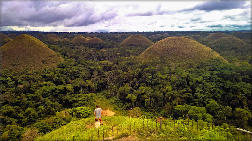

Bohol is one of the most popular and tourist-friendly destinations in the Philippines. This island province in the Central Visayas region attracts visitors from all over the world because of its stunning and diverse attractions,The home of the famous Chocolate Hills,The Chocolate Hills in Bohol is a one of a kind geological formation of grass-covered hills that turn brown during the dry season. Bohol is also known as the home of one of the world’s smallest primates, the tarsiers.The province has a rich history and is home to churches dating back to the early years of Spanish colonization. For adventure-lovers, it offers a host of adrenaline-packed activities. But the white sand beaches, world-class dive sites and generally laid-back provincial atmosphere of Panglao Island are what give Bohol its unique charm. Bohol is one of the most visited destinations in the Central Visayas region of the Philippines. The island province offers breathtaking spots for history buffs, beach lovers, and adrenaline junkies. Bohol is comprised of one major island and 73 smaller ones surrounding it, so you'll have plenty of places to explore during your trip here. One thing’s for sure: You’ll enjoy every second of your stay and love the diversity that Bohol offers. Bohol is the main island of Bohol Province, which also includes 75 smaller islands. The island lies southeast from Cebu Island and southwest of Leyte Island in the Central Visayas region. This oval-shaped island is the tenth largest of the Philippine archipelago. Bohol is a haven of tropical natural beauty. The coastline of the island is skimmed by gentle coves and white sand beaches. Bohol is well-known locally as a paradise for divers and snorkelers, though it's not as internationally famous as Boracay. Dolphin watching and whale watching tours are popular with both residents and visiting tourists. The best season is from March to June, but dolphins can be seen year-round. Bohol is famous for its Chocolate Hills; its tarsiers, which may be the world’s smallest primate; its heritage sites and old stone churches.